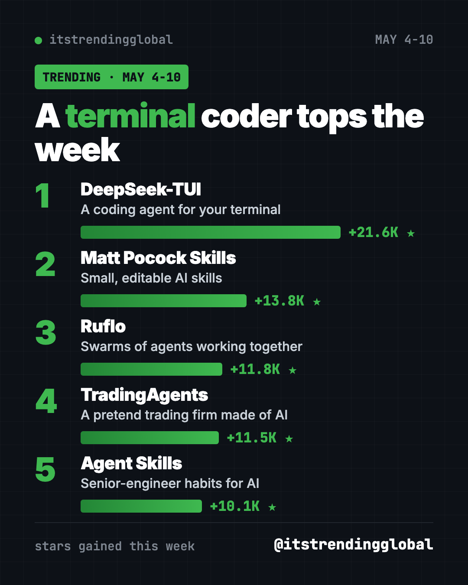
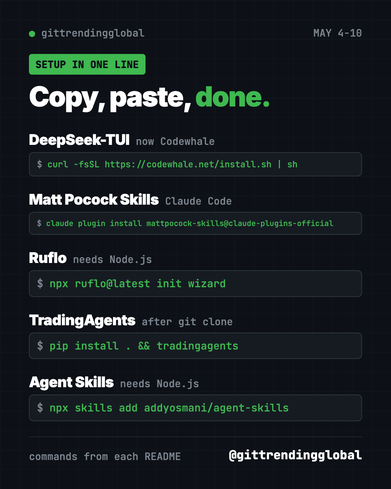

Home › Tools and repos › GitHub trending this week
GitHub Trending May 4 2026: DeepSeek-TUI Leads the Week
- Published 15 Oct 2026
- Updated 16 Oct 2026
- 6 min read
- By the ITG Now team
In this guide (9)
GitHub trending May 4 2026 was topped by DeepSeek-TUI, a coding helper that runs in your terminal. It gained about 21,600 stars. The project has since been renamed Codewhale and now works with almost any AI model.
Matt Pocock's skills, the Ruflo agent swarm tool, TradingAgents and Addy Osmani's Agent Skills completed the five. Every one of them is about making AI helpers do more, and do it more carefully.
Key takeaways
- DeepSeek-TUI began as a terminal helper for DeepSeek models. Today it is Codewhale, open to many model makers.
- Matt Pocock Skills stayed hot a week after hitting number one.
- Ruflo runs "swarms" of AI agents that split up work and learn from each task.
- TradingAgents came back with more stars than the week before. It is a research toy, not advice.
- Agent Skills packs senior-engineer habits into 25 skills and 9 slash commands.

The week in one table
| Repo | What it does | Best for | Stars this week | License |
|---|---|---|---|---|
| DeepSeek-TUI (Codewhale) | Coding agent in your terminal | Developers who like the command line | +21.6K | MIT |
| Matt Pocock Skills | Small, editable AI skills | Developers | +13.8K | MIT |
| Ruflo | Agent swarms for Claude Code and Codex | Power users | +11.8K | MIT |
| TradingAgents | AI team that studies a stock | Finance learners | +11.5K | Apache-2.0 |
| Agent Skills | Engineering habits as skills | Anyone coding with AI | +10.1K | MIT |
Star gains cover May 4 to 10, 2026. Totals were checked on GitHub on October 16, 2026.
1. DeepSeek-TUI: a coding agent in your terminal
Stars: +21.6K this week · about 41K total now
What it is: A coding agent that reads your project, edits files, runs commands and checks its own work, all in the terminal. "TUI" means a text screen you use with the keyboard. It started as deepseek-tui for DeepSeek's models. Now called Codewhale, it also supports OpenAI, Google, Mistral and others, plus local models.
Who it's for: Developers who want a free, open coding agent they can point at any model.
Everyday use: Type "fix the failing tests and explain what changed," then review its answer.
Install it:
curl -fsSL https://codewhale.net/install.sh | sh
On Windows: winget install HunterBown.CodeWhale.
Or ask your AI helper:
Install Codewhale (formerly DeepSeek-TUI) from github.com/codewhale-hq/Codewhale and connect a DeepSeek model.
See DeepSeek-TUI (now Codewhale) on GitHub
2. Matt Pocock Skills: a strong second week
Stars: +13.8K this week · about 293K total now
What it is: The everyday skill files of TypeScript teacher Matt Pocock. Small, composable and easy to change. They work in Claude Code, Codex, Copilot and VS Code.
Who it's for: Developers who want practical habits without a big framework.
Everyday use: Ask your AI to write a short plan you approve before any code changes.
Install it: For Codex:
codex plugin marketplace add mattpocock/skills
codex plugin add mattpocock-skills@mattpocock
Or ask your AI helper:
Install mattpocock/skills in my coding helper and pick one skill for planning a new feature.
See Matt Pocock Skills on GitHub · Read our full guide
3. Ruflo: a swarm of AI helpers
Stars: +11.8K this week · about 75K total now
What it is: Ruflo adds a control layer around Claude Code and Codex. Agents form "swarms" that split up a big job, remember across sessions and learn from tasks that went well. It also has a live console showing cost and progress.
Who it's for: Power users running long or complex AI jobs.
Everyday use: Hand a big cleanup job to a swarm and watch the cost meter in the console.
Install it: You need Node.js. In your project folder:
npx ruflo@latest init wizard
Or ask your AI helper:
Set up Ruflo from github.com/ruvnet/ruflo in this project with the default wizard settings.
⚠️ Heads up: Ruflo's add-ons run with your account's permissions. Its README says to review their code before installing.
4. TradingAgents: AI analysts arguing about a stock
Stars: +11.5K this week · about 111K total now
What it is: A Tauric Research framework that copies how a trading firm works. AI analysts study news, sentiment and company numbers. Bullish and bearish researchers debate. A trader and risk team then write a final call. It is meant for research.
Who it's for: Students and tinkerers learning how teams of AI agents reason.
Everyday use: Compare how the "bull" and "bear" agents argue about a company you know.
Install it:
git clone https://github.com/TauricResearch/TradingAgents.git
cd TradingAgents
pip install .
tradingagents
Or ask your AI helper:
Run TradingAgents from github.com/TauricResearch/TradingAgents once as a learning demo and explain the debate.
5. Agent Skills: senior-engineer habits, packaged
Stars: +10.1K this week · about 107K total now
What it is: A set of 25 skills from Addy Osmani. They walk an AI helper through each stage of building software, with commands like /spec, /plan and /build. The goal is that the AI follows the same quality checks a careful senior engineer would.
Who it's for: Anyone building apps with Claude Code, Codex or similar helpers.
Everyday use: Type /spec and let the AI write down what you want before it builds anything.
Install it: You need Node.js.
npx skills add addyosmani/agent-skills
Or ask your AI helper:
Install addyosmani/agent-skills and use /spec to plan a simple to-do app with me.

Which one should you try first?
- Want a free coding agent: Codewhale, the former DeepSeek-TUI.
- Already use Claude Code or Codex: add Matt Pocock Skills or Agent Skills. Pick one to start.
- Running big, long jobs: Ruflo.
- Curious about AI and markets: TradingAgents, strictly as a learning demo.
💡 Tip: Skill packs can overlap. Installing two that both plan features can confuse your AI helper. Try one at a time.
See the whole month in the best GitHub repos of May 2026 and May 2026 AI news. The week before is April 27 to May 3; next is May 11 to 17.
FAQ
What was GitHub trending the week of May 4, 2026?
DeepSeek-TUI, Matt Pocock Skills, Ruflo, TradingAgents and Agent Skills, ranked by stars gained.
What happened to DeepSeek-TUI?
It was renamed Codewhale and moved to codewhale-hq on GitHub. It still reads old DeepSeek-TUI settings and now supports many AI providers.
Is TradingAgents financial advice?
No. Its README says it is for research and not financial, investment or trading advice. We are not financial advisors either.
What is an AI agent swarm?
Several AI helpers working on one job at once, each taking a piece. Ruflo coordinates them and shares what they learn.
Are these tools free?
Yes, all five are free and open source. AI model fees may apply.
Keep reading

Trending GitHub Repos October 2026: The Top 5 So Far
The trending GitHub repos of October 2026 so far: a free Photoshop-style editor, an AI art studio, a big AI model for gaming PCs and more, explained.

Trending GitHub Repos This Week, Oct 5 2026: The Top 5
Trending GitHub repos this week Oct 5 2026: Matt Pocock's skills, the openGym workout tracker, e2e testing, HyperFrames video and claude-mem memory.

GitHub Trending September 28, 2026: Hindsight and Paperclip
GitHub trending September 28 2026: Hindsight, Paperclip, NVIDIA's OpenShell and a free 542-lesson AI course, with setup steps for each.